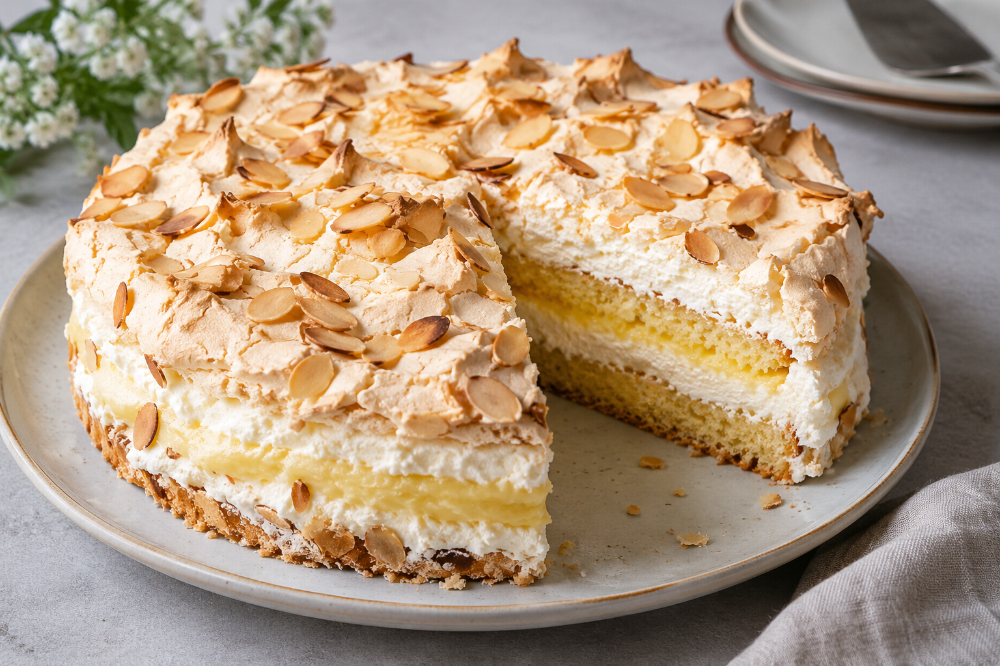

Kvæfjordkake

Bild av en Kvæfjordkake lagt med KI
Ingredienser
- Vaniljekrem
- 6 dl melk
- 8 stk. eggeplomme
- 1 dl sukker
- 2 ss maisenna
- 1 stk. vaniljestang
- 5 stk. gelatinplater
- Kakebunn:
- 100 g smør
- 120 g sukker
- 4 stk. eggeplomme
- 3 ss melk
- 150 g hvetemel
- 1 ts bakepulver
- 1 ts vaniljesukker
- Marengs:
- 4 stk. eggehvite
- 200 g sukker
- 50 g mandelflak
- 2 dl kremfløte
Slik gjør du
- Lag vaniljekrem først. Ha melk, eggeplommer, sukker og maisstivelse i en kjele. Skrap ut vaniljefrø fra vaniljesteng og ha frø og stang i eggeblandingen. Klipp opp gelatingplater og ha dem i kjelen.
- Varm opp under omrøring til kremen tykner. Når konsistensen på kremen er som en tykk vaniljesaus, ta den av platen og hell den over i en bolle. Avkjøl. Pisk kremen lett før bruk slik at den blir jevn og klumpefri.
- Forvarm stekeovn til 160 °C
- Pisk smør og sukker til en luftig og krmete konsistens. Pisk inn eggeplommer en etter en, pisk røren godt sammen mellom hver eggeplomme. Sikt hvetemel, bakepulver og vaniljesukker. Vend litt av meldblandingen i røren, og spe vekselvis med melk. Bland røren godt sammen. Fordel røren utover i en bakepapirkledd langpanne.
- Ha eggehviter i en ren, tørr bolle av glass eller rustfritt stål. Pisk dem sakte sammen med litt salt til de danner et mykt skum. Skru opp hastigheten til boblene i skummet er små og jevne. Når skummert danner stive toppper, tilsett sukker, lett av gangen. Pisk til blandingen er myk og blank og alt sukkeret er oppløst. Ikke visp for lenge, da blir marengen kornete. Frdel marengsen oppå røren i langpanneformen. Dryss på mandelflak og stek nederst i ovnen i 30-35 minutter, til marengsen er gyllen.
- Dra forsiktig bakepapiret med kaken over på en rist og avkjøl
- Pisk kremfløte stiv og vend den lett sammen med eggekremen.
- Del kaken i to på midtebn. Legg den ene kakedelen på et serveringsfat. Bre kremfyllet utover kakebunnen, og legg den andre kakedelen over. Sett kaken kaldt frem til servering.
Home